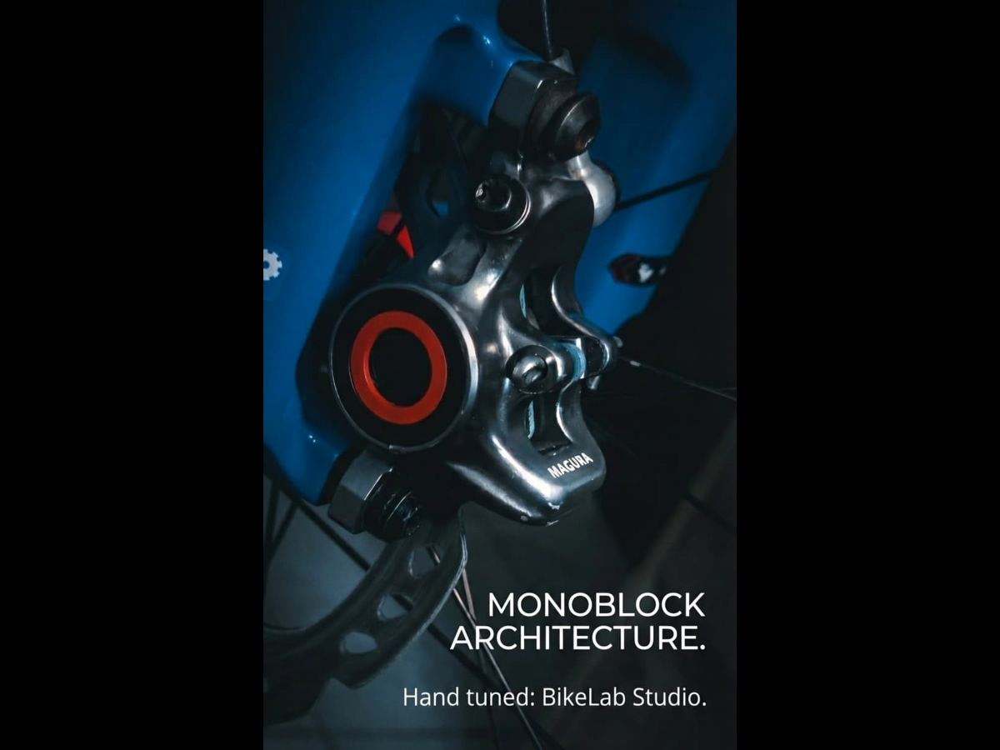
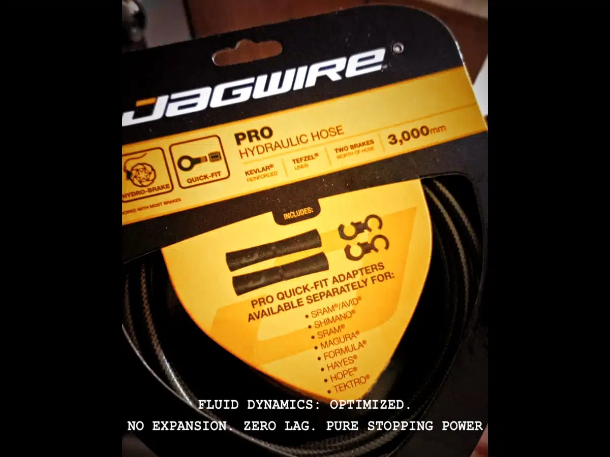

A 3,000 metros sobre el nivel del mar, no son tus pulmones los primeros en fallar. Tampoco tus piernas. Son tus frenos.
La presión atmosférica cae. Los sistemas hidráulicos —humanos o mecánicos— entran en estrés. Las mangueras se expanden. Los compuestos se fatigan. El volumen muerto se multiplica. La histéresis aparece.
Aquí es donde la ingeniería deja de ser marketing y se convierte en supervivencia.
RESPUESTA DIRECTA
Los frenos hidráulicos pierden eficacia en altitud por la suma de dos efectos termodinámicos. A ~3,287 m s.n.m. la presión atmosférica cae a ~68.8 kPa (−32% respecto al nivel del mar), lo que reduce el punto de ebullición del fluido DOT 4 en ~22°C y lo acerca al fade en descensos largos; además, el aire más delgado enfría peor el caliper. La altitud no degrada el sistema de forma uniforme: amplifica las deficiencias previas de compliancia volumétrica (las mangueras de nylon generan hasta 15 ml de volumen muerto a 70 bar) y de rigidez del caliper. Por eso un caliper monoblock de baja compliancia (Magura MT7) con mangueras Kevlar/PTFE mantiene un tacto firme donde los sistemas OEM se vuelven esponjosos. Migrar a un fluido de mayor punto de ebullición como el DOT 5.1 y a componentes de baja expansión es un requisito de seguridad en altitud, no una mejora de rendimiento.
Objetivo. Analizar el comportamiento termodinámico de los sistemas de frenado hidráulico en condiciones de altitud elevada, identificando las variables físicas que determinan la pérdida de eficiencia y los criterios de selección de componentes que minimizan ese deterioro.
Método. Revisión técnica del modelo barométrico estándar NASA (1976), la ecuación de Clausius-Clapeyron aplicada al fluido DOT 4, la compliancia volumétrica de mangueras hidráulicas y la rigidez estructural de calipers monoblock versus divididos. Los modelos teóricos se contrastan con observación de campo comparativa en ruta de montaña a ~3,287 m s.n.m.
Resultados. A 3,287 m s.n.m. la presión atmosférica cae a ~68.8 kPa (-32% respecto al nivel del mar), reduciendo el punto de ebullición del DOT 4 en aproximadamente 22°C. La compliancia volumétrica de mangueras estándar de nylon genera un volumen muerto parasitario de hasta 15 ml a 70 bar, incrementado por el diferencial de presión transmural a altitud. La observación de campo registró respuesta táctil diferenciada entre el sistema monoblock de bajo índice de compliancia (Magura MT7 + Jagwire Pro-Hydro) y los sistemas OEM del grupo, coherente con las predicciones del modelo.
Conclusión. La altitud no degrada el sistema hidráulico de forma uniforme: actúa como amplificador de deficiencias preexistentes en compliancia volumétrica y rigidez estructural. La selección de componentes de bajo índice de expansión no es una mejora de rendimiento sino un requisito de seguridad operativa en altitud elevada.
Palabras clave: frenos hidráulicos, altitud, compliancia volumétrica, punto de ebullición DOT 4, Clausius-Clapeyron, frenado MTB, termodinámica aplicada, Andes, Marcahuamachuco
El análisis teórico presentado en este documento se contrasta con una observación comparativa de campo realizada en condiciones reales de ruta. A continuación se describen las condiciones del estudio.
Localización y altitud: Ruta de montaña en Marcahuamachuco, La Libertad, Perú (altitud aproximada: 3,287 m s.n.m., coordenadas referenciales 7.9° S, 78.0° W). El perfil del recorrido correspondió a un descenso prolongado de alta velocidad en terreno no técnico, condición que maximiza la aplicación sostenida de frenos y el consiguiente aumento de temperatura en el sistema hidráulico.
Participantes y configuraciones: Grupo de entre 5 y 10 ciclistas con sistemas de frenado hidráulico heterogéneos. Las configuraciones de pistones variaron entre 2 y 4 pistones por caliper, con tamaños de rotor de 160 mm y 180 mm. El sistema del autor (configuración de referencia) correspondió a caliper Magura MT7 monoblock de 4 pistones en eje delantero, caliper de 2 pistones en eje trasero, mangueras Jagwire Pro-Hydro (Kevlar + PTFE), fluido DOT 5.1, rotor 180 mm delantero y 160 mm trasero.
Protocolo de observación: No se empleó instrumentación cuantitativa. La evaluación se basó en retroalimentación táctil directa del autor y en retroalimentación verbal espontánea de los demás participantes durante y al finalizar el descenso. No se solicitaron evaluaciones estructuradas ni se identificó a los participantes.
Hallazgo observado: Los participantes con sistemas OEM estándar reportaron de forma espontánea una sensación de respuesta "esponjosa" o de recorrido aumentado en la palanca durante el descenso. El sistema de referencia del autor mantuvo una respuesta táctil seca y predecible a lo largo de todo el recorrido, sin variación perceptible en el punto de mordida. Esta diferencia cualitativa es coherente con la predicción del modelo de compliancia volumétrica diferencial entre mangueras de nylon estándar y mangueras de Kevlar/PTFE bajo las condiciones de presión y temperatura presentes a esa altitud.
La atmósfera terrestre no es uniforme. A medida que asciendes, la columna de aire sobre ti disminuye, y con ella la presión que ejerce sobre todo sistema cerrado o semiabierto.
Donde:
En palabras: la presión del aire no cae a ritmo constante con la altura, sino de forma exponencial: cada tramo de ascenso recorta un porcentaje fijo de la presión que aún quedaba. Por eso a 3,000 m ya perdiste alrededor del 30% de la presión atmosférica del nivel del mar. Y esa caída de presión es la que arrastra hacia abajo el punto de ebullición del fluido de freno — el origen de todo lo que sigue.
| Altitud (m) | Presión (kPa) | Densidad relativa | Pérdida vs nivel del mar |
|---|---|---|---|
| 0 | 101.33 | 1.000 | — |
| 3,000 | 70.12 | 0.742 | -30.8% |
| 4,000 | 61.66 | 0.668 | -39.1% |
| 5,000 | 54.05 | 0.601 | -46.7% |
Esta caída no afecta directamente la presión hidráulica interna —el circuito está cerrado— pero sí modifica tres variables críticas que la mayoría de talleres ignoran:
El DOT 4 —estándar en sistemas MTB— tiene un punto de ebullición "dry" de 230°C a nivel del mar. Pero ese valor no es constante. Depende directamente de la presión atmosférica.
A 4,000 metros, la presión es 0.61 atm. Aplicando Clausius-Clapeyron con el calor latente de vaporización del glicol (ΔH ≈ 50 kJ/mol), el punto de ebullición cae a aproximadamente 195°C [2]. Este margen se estrecha adicionalmente en condiciones reales de uso: Ibrahim y Petrík (2024) documentaron que una absorción de humedad del 2% en fluido DOT 4 reduce el punto de ebullición en ~45°C independientemente de la altitud [3]. En un sistema expuesto a variaciones higrotérmicas de montaña —donde la niebla, el sudor y las diferencias de temperatura entre salida y cumbre son constantes— este factor puede llevar el margen operativo a niveles críticos sin que el ciclista lo perciba hasta el primer descenso sostenido.
| Altitud | Presión (atm) | Punto de ebullición DOT 4 | Margen térmico perdido |
|---|---|---|---|
| 0 m | 1.00 | 230°C | — |
| 3,000 m | 0.69 | 205°C | -25°C |
| 4,000 m | 0.61 | 195°C | -35°C |
| 5,000 m | 0.53 | 185°C | -45°C |
ADVERTENCIA TÉCNICA:
En un descenso prolongado de montaña, los rotores alcanzan fácilmente 300-400°C. El calor se transfiere al fluido a través del caliper. A 4,000 metros, con solo 195°C de margen, el riesgo de ebullición local —y el consecuente vapor lock— se multiplica.
Esto no es teoría. Es termodinámica básica que se traduce en palancas que van al puño sin frenar.
Las mangueras hidráulicas no son tubos rígidos. Son estructuras viscoelásticas que se expanden bajo presión interna. Esa expansión —llamada compliancia volumétrica— roba volumen del sistema.
En una manguera estándar de Nylon reforzado (como la mayoría de OEM), la compliancia puede estar en el rango de 0.15-0.25 ml/bar. No parece mucho. Pero bajo presiones de frenado de 60-80 bar, eso significa 9-20 ml de volumen perdido en expansión de manguera. Antanaitis et al. (2010) demostraron que el consumo volumétrico de la manguera —denominado fluid consumption— es el factor dominante en la degradación de la sensación de palanca en sistemas hidráulicos de freno, superando en impacto a la compresibilidad del fluido y la deformación del caliper [5]. A altitud, este efecto se amplifica porque el diferencial de presión transmural entre el interior del circuito y la presión atmosférica exterior aumenta, incrementando la tendencia expansiva de la manguera.
Ese volumen no llega al pistón. Se queda hinchando la manguera.

Las mangueras Jagwire Pro-Hydro usan un núcleo de PTFE (Teflón) reforzado con fibra de Kevlar. El módulo de elasticidad del Kevlar es aproximadamente 3 veces mayor que el Nylon. Resultado: reducción del 30% en compliancia volumétrica.
| Tipo de manguera | Material de refuerzo | Expansión relativa | Volumen perdido a 70 bar |
|---|---|---|---|
| OEM estándar | Nylon trenzado | 1.0x (baseline) | ~15 ml |
| Jagwire Pro-Hydro | Kevlar + PTFE | 0.7x | ~10 ml |
| Ganancia | — | -30% | 5 ml recuperados |
Esos 5 ml de diferencia son la línea entre un freno que muerde y uno que se siente esponjoso a mitad de un switchback a 4,500 metros.
Un caliper dividido —el diseño tradicional de dos piezas atornilladas— experimenta microflexión bajo carga. Esa flexión es elástica, reversible, pero roba presión del sistema de la misma forma que la compliancia de la manguera.
La deflexión se calcula con la ecuación de viga en voladizo:
| Material | Módulo de Young (GPa) | Deflexión relativa | Aplicación |
|---|---|---|---|
| Aluminio 7075-T6 | 71.7 | 1.0x | Calipers divididos estándar |
| Aluminio forjado monoblock | 71.7 | 0.6x | Magura MT7 (geometría optimizada) |
| Composite carbono | ~140 | 0.5x | Cilindros maestros high-end |
El diseño monoblock de Magura elimina la unión atornillada. No hay junta que se deforme. No hay interfaz que ceda. La estructura completa actúa como un solo elemento, reduciendo la deflexión en aproximadamente 40% comparado con un caliper dividido de geometría equivalente.
Esto no es magia. Es geometría estructural básica aplicada correctamente.
A 5,000 metros, la densidad del aire es 40% menor que a nivel del mar. El enfriamiento por convección —que depende directamente de la densidad del fluido— cae proporcionalmente.
Los rotores y calipers generan el mismo calor por fricción. Pero disipan menos. El resultado es acumulación térmica más rápida, especialmente en descensos prolongados donde no hay tiempo de enfriamiento entre frenadas.
Combinado con el punto de ebullición reducido del DOT 4, esto crea una ventana operativa peligrosamente estrecha.
DATO DE CAMPO:
En el Cañón del Colca (4,160 m), hemos visto sistemas OEM llegar a fade completo en menos de 15 minutos de descenso continuo. El mismo sistema a nivel del mar aguantaría 45 minutos sin problemas.
El sistema hidráulico de frenado no es un componente aislado. Es un conjunto termodinámico que responde a presión atmosférica, temperatura, materiales y geometría.
Por eso usamos:
Magura MT7 monoblock: Eliminación de deflexión por diseño estructural unificado. Aluminio forjado 7075-T6 con geometría optimizada para máxima rigidez.
Jagwire Pro-Hydro: Reducción del 30% en compliancia volumétrica mediante refuerzo de Kevlar y núcleo de PTFE. Cero expansión parasitaria.
DOT 5.1: Punto de ebullición dry de 260°C (vs 230°C del DOT 4). A 4,000 metros, esto significa 225°C en vez de 195°C. Margen térmico crítico.
Lo que aplicas en la palanca es exactamente lo que llega al rotor. Sin retraso. Sin desviación. Sin margen de error.
Esto no es un upgrade. Es ingeniería aplicada a la supervivencia en altitud.
Este documento constituye un análisis técnico aplicado basado en modelos físicos establecidos y observación de campo cualitativa. Las siguientes limitaciones deben ser consideradas al interpretar sus conclusiones:
Ausencia de instrumentación cuantitativa. No se midieron temperatura del fluido, temperatura de rotor, presión hidráulica interna, ni recorrido de palanca durante la observación de campo. Los valores numéricos presentados en las tablas de este artículo proceden exclusivamente de cálculos basados en los modelos físicos referenciados, no de medición directa en los componentes utilizados.
Heterogeneidad de configuraciones. Los sistemas comparados en la observación de campo presentaron variaciones en número de pistones (2 y 4), tamaño de rotor (160 y 180 mm), y presumiblemente en marca y especificación de fluido y manguera. Esta variabilidad impide aislar una única variable causal para las diferencias táctiles reportadas.
Subjetividad de la evaluación táctil. La retroalimentación de los participantes fue verbal y espontánea, no estructurada mediante escala ni protocolo estandarizado. La percepción de "esponjosidad" en la respuesta de freno es una evaluación subjetiva dependiente de la experiencia y sensibilidad individual de cada ciclista.
Muestra no representativa. El tamaño del grupo (entre 5 y 10 participantes) no permite generalización estadística. Las observaciones son consistentes con el modelo pero no lo validan de forma experimental.
Altitud única. La observación se realizó a una sola altitud (~3,287 m s.n.m.). El modelo predice efectos progresivos con la altitud, pero no fueron evaluados a múltiples cotas en este estudio.
[ CLUSTER_DATA_LINKS ] // SISTEMAS HIDRÁULICOS
Para llevar estos principios termodinámicos de expansión y deflexión a problemas comunes de taller, puedes revisar nuestra guía diagnóstica:
Porque la altitud combina dos efectos termodinámicos: la menor presión atmosférica reduce el punto de ebullición del fluido (a ~3,287 m el DOT 4 pierde unos 22°C) y el aire más delgado enfría peor el caliper. En descensos largos esto acerca el fluido a la ebullición, que produce el fade o pérdida de mordida en la palanca.
A ~3,287 m s.n.m. la presión atmosférica cae a ~68.8 kPa, un 32% menos que a nivel del mar, lo que reduce el punto de ebullición dry del DOT 4 en aproximadamente 22°C respecto a los 230°C que tiene a nivel del mar. El fluido húmedo, que ha absorbido agua, hierve aún antes.
Sí, pero como medida de seguridad, no como lujo. El DOT 5.1 tiene un punto de ebullición dry de 260°C frente a los 230°C del DOT 4. Y las mangueras de baja compliancia (Kevlar/PTFE) junto a un caliper monoblock reducen el volumen muerto parasitario que vuelve la palanca esponjosa en altitud.
Por la compliancia volumétrica: bajo presión, las mangueras de nylon se expanden y generan hasta 15 ml de volumen muerto a 70 bar, efecto que la altitud amplifica por el mayor diferencial de presión transmural. Ese volumen perdido alarga el recorrido de la palanca y reduce la sensación de mordida.
¿Necesitas saber qué monta tu bici —Post Mount vs Flat Mount, Center Lock vs 6 tornillos, qué rotor le entra? Está todo en el Clúster Frenos de BikeLab-pedia.
© 2026 BikeLab Studio. Contenido bajo CC BY 4.0: puedes copiarlo, traducirlo y publicarlo, incluso con fines comerciales. La cita es obligatoria. Sin atribución, la licencia se revoca de forma automática (CC BY 4.0, §6.a) y el uso pasa a ser una infracción de derechos de autor: solicitamos la retirada del contenido y su desindexación. · Diseño y propiedad: Carlos Ravello Joo